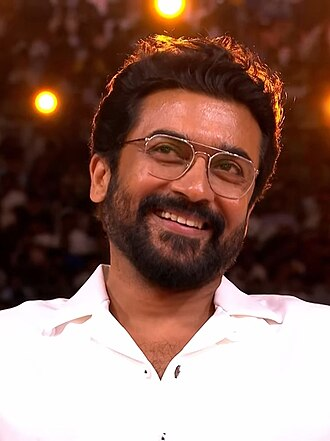

Actor Suriya

Saravanan Sivakumar (born 23 July 1975), known professionally as Suriya,
is an Indian actor and film producer who primarily works in Tamil films.
One of the highest-paid Tamil actors, Suriya is considered as one of the finest actors of Indian cinema.
Suriya has received numerous accolades including two National Film Awards,
six Filmfare Awards South and five Tamil Nadu State Film Awards.
He has featured six times in Forbes India's Celebrity 100 list.
Debut
After making his debut in Nerukku Ner (1997) at the age of 22.
Awards
Suriya landed his breakthrough role in Nandhaa (2001) and then had his first major commercial success with the thriller Kaakha Kaakha (2003).
Following award-winning performances of a conman in Pithamagan (2003) and a hunchback in Perazhagan (2004),
he played a man suffering from anterograde amnesia in the 2005 blockbuster Ghajini.
He rose to stardom with dual roles of a father and son in Gautham Vasudev Menon's semi-autobiographical Vaaranam Aayiram (2008).
Status
His status as an action star was established with roles of a smuggler in Ayan (2009), and an aggressive cop in the Singam trilogy.
He also found success with the science fiction films 7aum Arivu (2011) and 24 (2016) and then went on to work in critically acclaimed films
like Soorarai Pottru (2020) and Jai Bhim (2021), the former of which earned him the National Film Award for Best Actor.
Brother
Suriya is the elder son of actor Sivakumar and his younger brother Karthi is also an actor.
In 2006, he married actress Jyothika whom he co-starred with in 7 films. He began Agaram Foundation,
which funds various philanthropic activities, later that year.
The year 2012 marked his debut as a television presenter with the Star Vijay game show Neengalum Vellalam Oru Kodi,
the Tamil version of Who Wants to Be a Millionaire?. In 2013, Suriya founded the production house 2D Entertainment.